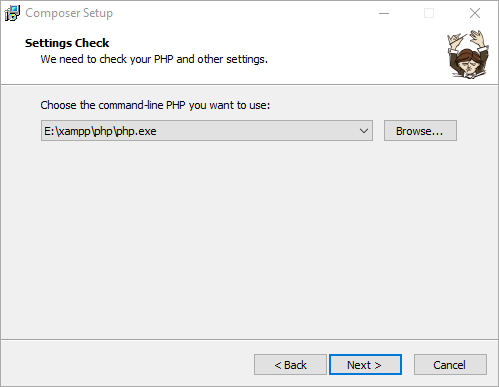

搭建laravel 开发环境
安装composer
从网上查了相关资料，需要通过composer安装和更新laravel，所以要先安装composer。
安装的时候路径填写php安装路径。

安装之后通过命令composer –version 来查看是否安装成功。
通过composer安装laravel
通过composer安装laravel 有两种方式，但是本人习惯使用composer create-project 来创建。
composer create-project --prefer-dist laravel/she "5.5.*"//laravel代表laravel项目 ；she代表项目名称。5.5* 代表版本号 本人载安装的时候忽略了这一项 。
这里说一下安装的时候设置一下镜像，这样下载的快些，并且不会出现问题。
配置全局镜像：
composer config -g repo.packagist composer https://mirrors.aliyun.com/composer/
取消配置：
composer config -g --unset repos.packagist
使用phpstudy搭建本地环境
laravel框架对环境有一些要求，虽然官网有自己的推荐，但是作为长时间使用phpstudy的人来说，能不换就不换吧。
来看看官方对其他环境的要求：
- PHP >= 5.5.9
- OpenSSL PHP Extension
- PDO PHP Extension
- Mbstring PHP Extension
- Tokenizer PHP Extension
在phpstudy找到相应的服务开启即可。
因为laravel 的入口文件在项目的public文件夹，所以url要写成：localhost/she/public //she 为项目名称
到此基本配置完成。
如果你使用nginx，那么在vhost.conf 里的 location / 下加入：
try_files $uri $uri/ /index.php?$query_string;
还有就是大家最好下载所以使用版本的文档，这样大多数问题基本可以解决。
大家也可以在laravel china 社区查找相关问题。虽然现在没以前火热了，但解决基本问题还是可以的。